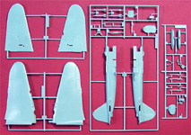

Accurate Miniatures Ilyushin IL-2M3
Kit #3407
MSRP $37.98
Images and text Copyright © 2006 by Matt Swan
Developmental Background
In 1938 Sergey Ilyushin and his design team developed an aircraft that was to become virtually a flying tank. This aircraft, the IL-2, featured an armored shell that contained the crew, engine, radiators and fuel tank and afforded the crew an exceptional level of protection from enemy fire. This protection was achieved with the sacrifice of speed and maneuverability. The aircraft had a standing empty weight of nearly 10,000 pounds with that armor shell being nearly 15% of the total aircraft mass. When first flow in December of 1939 it was quickly apparent that the craft was seriously underpowered by its Mikulin AM-35 engine of only 1370 hp. Fortunately for the Russian air crews Mikulin had a more powerful engine, the 1680 hp MA-38, ready to go and that was incorporated into the plane for production.
The IL-2 initially went into combat on the Eastern Front as a ground attack aircraft and tank buster. German fighter pilots quickly learned that the best attack on one of these flying tanks was to approach from above and to the rear firing down into the cockpit. Ilyushin responded to this threat by installing an aft gunner which changed the aircraft designation to IL-2M. The effectiveness if the IL-2 was adequately demonstrated during the battle of Kursk where on 7 July 1943 the 9th Panzer Division lost seventy tanks in twenty minutes. During another four hour sortie by the IL-2 the 17th Panzer Division lost 240 tanks that was nearly 80% of their total armored force! Due to the aircraft’s surprising durability and ability to soak up punishment the Germans referred to it as “Flying Concrete” or sometimes “Black Death”. By 1943 further development of the type resulted in better armor protection for the aft gunner, heavier cannons, upgraded from 20mm to 37mm, and a 15 degree sweep to the outer wing panels. This last development greatly improved the aircrafts performance resulting in the final IL-2M3.
Today only a handful of IL-2s survive in museums but recently several airframes have been recovered from the bottom of Lake Balaton in Hungary. There is no question that this was an instrument weapon for the Russian people, Stalin was once quoted as saying "The Red Army needs the Il-2 as it needs air or bread.”
The Kit
This kit is from the original stable of Accurate Miniature releases, not the new releases after the company changed hands. Don’t take this as to mean there is anything wrong with the new releases – they are all good, I just want to be clear on this point. The kit arrives in a fairly large box with attractive box art. Upon opening the box the modeler is greeted with two large poly bags containing the primary parts to the kit. These are all cast in a light gray high pressure plastic with an excellent level of detail, finely engraved panel lines and appropriate raised detail. I can find no evidence of flash, sink marks or noticeable injector pin markings. The first bag of parts includes the main fuselage pieces and wing panels along with a few detail pieces. The second bag contains the engine cowling, tail surfaces, central wing panel and lots of detail pieces. The wing is an odd piece of work compared to most low wing model aircraft; it is a five piece assembly and includes a short spar. The instructions direct the modeler to assemble the entire cockpit area and attach it to the center panel then into the fuselage.
Beneath these two bags is a false bottom with a full color profile of the aircraft. Lifting this false bottom gives you access to the bagged clear parts, decals and instructions. This is a fairly common method of packaging for Accurate Miniatures and ensures that the clear parts stay free of damage and clear. It also prevents the decals from taking any abrasive shipping damage. The kit includes lots of detail and is very accurate in measurements and profile. There are one hundred nine gray parts and nine clear parts for a total of one hundred eighteen pieces in the box. Looking at the clear parts the main canopy pieces display good clarity and well defined raised frame lines along with some very delicate internal frame lines that will most certainly drive many modelers around the bend when they try to paint them. The instrument panel is also provided as a clear part and is supplemented with a decal covering the instrument faces. The kit also gives us a pretty nice selection of underwing stores and cannons.

You may click on the small images above to view larger pictures.
Decals and Instructions
The kit instructions are very complete and come in a booklet form of twelve pages. They begin with a black and white profile of the aircraft and a short background of the type. Included in the instructions is a complete color chart with paint codes for seven of the most commonly found paint manufactures. Each assembly step comes with detailed painting instructions and complete written assembly instructions to accompany the exploded view image.
 With many models it is not necessary to follow the instructions religiously but that is not the case with Accurate Miniatures. If you do not want to create headaches for yourself you had best follow these instructions in the order presented. Even so you will have some difficulties especially with the final wing to fuselage assembly. The instructions conclude with painting and decal placement instructions for a single aircraft.
With many models it is not necessary to follow the instructions religiously but that is not the case with Accurate Miniatures. If you do not want to create headaches for yourself you had best follow these instructions in the order presented. Even so you will have some difficulties especially with the final wing to fuselage assembly. The instructions conclude with painting and decal placement instructions for a single aircraft.
The kit supplies decals for one aircraft only and that one is a unit based in Leningrad in 1944. This is a tricolor top scheme over blue. The decals are complete and of good quality, they show excellent print registry and color density. They include propeller markings and some service stencils. They are nicely thin and react well with common setting solutions.
Conclusions
When it says Accurate Miniatures on the box you can pretty much count on it being a good kit and this one is no exception. Yes there are a few fiddly points like getting the wing to fuselage connection without tearing your hair out but in the end you get one fine model that is indeed accurate. This kit and it’s earlier version the IL2 have been on the market for a few years now and the aftermarket guys have produced a few interesting items and Accurate Miniatures has even jumped on the band wagon with a replacement set of decals for three additional aircraft. Czech Master has issued an armament set for the internal bomb bay and Eduard has issued the rest of the details for the bomb bay in an extensive photo etched package that also includes flaps. Eduard has a second PE set that will add a little more depth to the cockpit. Even without these aftermarket items you can be assured of having a top notch model being built straight from the box. I give this kit a very good recommendation.


 With many models it is not necessary to follow the instructions religiously but that is not the case with Accurate Miniatures. If you do not want to create headaches for yourself you had best follow these instructions in the order presented. Even so you will have some difficulties especially with the final wing to fuselage assembly. The instructions conclude with painting and decal placement instructions for a single aircraft.
With many models it is not necessary to follow the instructions religiously but that is not the case with Accurate Miniatures. If you do not want to create headaches for yourself you had best follow these instructions in the order presented. Even so you will have some difficulties especially with the final wing to fuselage assembly. The instructions conclude with painting and decal placement instructions for a single aircraft.
{kind=link}
{kind=link}
{kind=link}